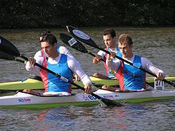
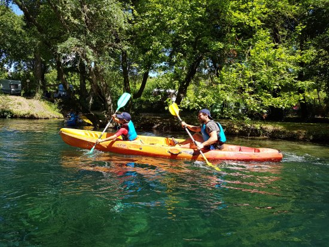

<link rel="stylesheet" href="https://stackpath.bootstrapcdn.com/bootstrap/4.2.1/css/bootstrap.min.css"
      integrity="sha384-GJzZqFGwb1QTTN6wy59ffF1BuGJpLSa9DkKMp0DgiMDm4iYMj70gZWKYbI706tWS" crossorigin="anonymous">


<ion-header>
    <button (click)="goToSelect()"><ion-icon name="stats"></ion-icon></button>


</ion-header>


<ion-content padding>
    <div class="row">
        <div class="col-sm" style="text-align: center; color: #FF7F50">
            <button (click)="openModal('XVIIIe siècle','Le terme de canoë tire son origine du langage des Indiens d Amérique du Nord (XVIIIe siècle) mais serait issu de l espagnol canoa. Ces Indiens construisaient des embarcations dans des troncs d arbres pour se déplacer plus aisément sur les rivières au lieu d avoir à traverser des forêts très denses. Ces embarcations étaient fortes utiles lors des voyages vers des lieux de marchandages mais aussi pour la pratique de la chasse, de la pêche ou lors des guerres. ', '../../assets/imgs/history/18e.jpg')">
                <p>XVIIIe siècle</p>
            </button>
        </div>
        <div class="col-sm" style="text-align: center; color: #FF7F50">
            <button (click)="openModal('1850','La pratique de ce sport dans la culture occidentale fut introduite par John MacGrégor durant la seconde moitié du XIXe siècle. John MacGregor (1825-1892), surnommé « Rob Roy », est un avocat, explorateur, écrivain et philanthrope écossais. Il est souvent considéré comme le créateur des premiers canoë à voile, et comme la personne qui a popularisé la pratique sportive du canoë en Europe et aux États-Unis. En 1866, il a fondé le Royal Canoe Club (en) (RCC) britannique, premier club de canoë-kayak du monde. Il était également artiste et il a dessiné toutes les illustrations de ses livres de voyage.', '../../assets/imgs/history/1850.jpg')">
                <p>1850</p>
            </button>
        </div>
        <div class="col-sm" style="text-align: center; color: #FF7F50">
            <button (click)="openModal('1865','La pratique sportive du canoë-kayak en eau calme a vue le jour en Angleterre en 1865. Ce sport s’est ensuite répandu en France (1869) et en Amérique du Nord (1871).', '../../assets/imgs/history/1865.jpg')">
                <p>1865</p>
            </button>
        </div>
        <div class="col-sm" style="text-align: center; color: #FF7F50">
            <button (click)="openModal('1924','C est au XXe siècle, et plus précisément en 1924, qu est créée la Fédération internationale de canoë. Les compétitions s enchaînent : le premier championnat d Europe a lieu en 1933 et le premier championnat du monde en 1938. Ce sport devient une épreuve officielle des jeux olympiques de Berlin en 1936.', '../../assets/imgs/history/1924.jpg')">
                <p>1924</p>
            </button>
        </div>
        <div class="col-sm" style="text-align: center; color: #FF7F50">
            <button (click)="openModal('De nos jours','De nos jours il existe enormément de variantes dans la pratique du canoe-kayak : En eau vive (le Slalom, la Descente, le Freestyle (ou rodéo), le Rafting, la Haute-rivière), en eau calme (La Course en ligne, le Marathon, le Paracanoë, le Kayak-polo, le Dragon Boat, la Randonnée), en mer (L Ocean Racing (ou Merathon), la Vaa (ou pirogue polynésienne), le Wave-ski, le Kayak de mer (randonnée)). Il existe aujourdhui des millions de licenciés à travers le monde.', '../../assets/imgs/history/dnj.jpg')">
                <p>De nos jours</p>
            </button>
        </div>
    </div>
    <br>
    <hr width="100%" color="white" size="4" style="background-color: white; color: #000;">
    <br>
    <div class="row" style="padding-top: 5%">
        <div class="col" style="background-color: white;">
            <p style="font-size: 25px; text-align: center;">Description</p>
            <p style="font-size: 20px; text-align: center;">Un canoë est une embarcation ouverte dirigée en position à
                genoux avec une pagaie simple.
                Le terme de kayak vient du langage des esquimaux : il désigne une petite embarcation de pêche, faite de
                peaux de phoque tendues sur une légère carcasse de bois et manœuvrée à la pagaie. Ces pagaies servent à
                propulser, diriger et équilibrer l'embarcation. Un kayak est une embarcation fermée dirigée en position
                assise avec une pagaie double.</p>
        </div>
        <div class="col" style="background-color: white;">
            <p style="font-size: 25px; text-align: center;">Règles de sécurité</p>
            <ul style="font-size: 20px; text-align: center;">
                <li>Utiliser un équipement adapté</li>
                <li>Une embarcation conforme</li>
                <li>Renforcer sa condition physique</li>
                <li>Anticiper l’environnement et le contexte</li>
                <li>Ne jamais partir seul</li>
            </ul>
        </div>
    </div>
    <div class="row">
        <div class="col" style="text-align: center;">
            
        </div>
        <div class="col" style="text-align: center;">
            
        </div>
    </div>

</ion-content>
